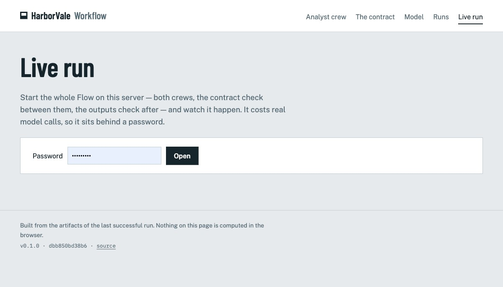
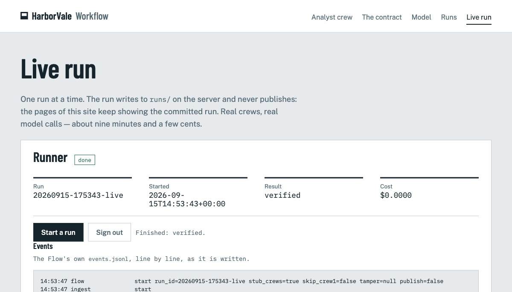
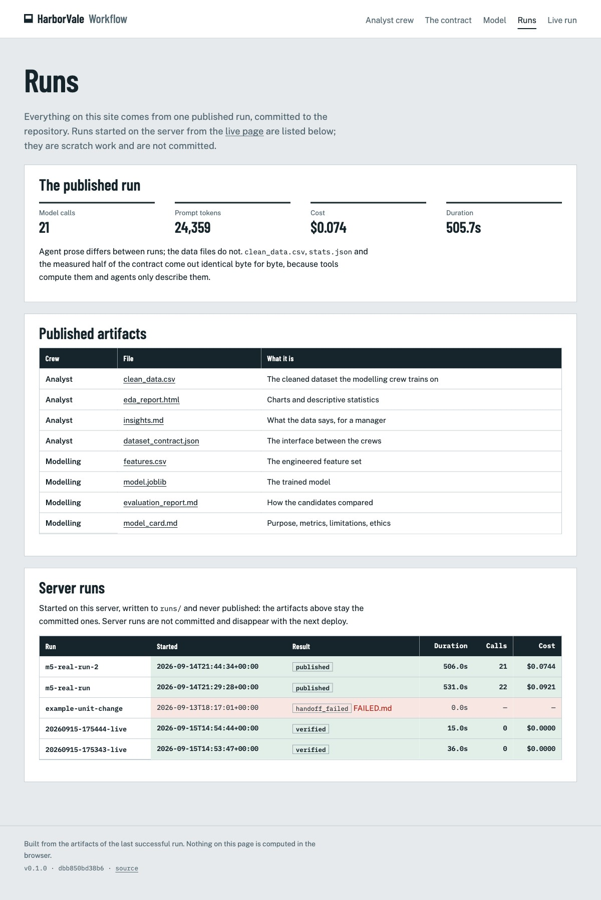

M7: ריצה חיה מאחורי סיסמה
עד עכשיו האתר הראה ריצה אחת — זו שמקומטת בריפו. M7 מוסיפה דף שבו מי שיש לו את הסיסמה מפעיל את ה-Flow כולו על השרת ורואה אותו קורה, שורה אחר שורה מאותו events.jsonl שה-Flow כותב. ריצות שרת הן טיוטה: הן לא מפרסמות, והדפים ממשיכים להראות את הריצה המקומטת.
01מה זה עושה ולמה
הברייף מבקש Flow שרץ מקצה לקצה עם עצירה אכיפה בתפר. עד M5 אפשר היה להריץ אותו רק מהטרמינל. עכשיו הוא רץ גם על Railway, מאחורי סיסמה, ומי שצופה רואה בדיוק מה שה-Flow רושם: צוות 1 מתחיל, אימות התפר עובר או נכשל, צוות 2, אימות התוצרים. זה עולה קריאות מודל אמיתיות — בערך תשע דקות וכמה סנטים — ולכן הסיסמה. בלי APP_PASSWORD על השרת הדף אומר "לא מופעל" (503), כך שפריסה בלי המשתנה היא פריסה בלי הפיצ'ר, לא פיצ'ר פתוח.
02מה נבנה
app/live.py—LiveRunner: אחד לתהליך. נעילה, thread רקע אחד, ומצב שהדפים שואלים:idle | running | done | failed, ועם הסיום גם התוצאה של ה-Flow, מספר הקריאות והעלות. ריצה אחת בכל פעם:POST /live/startמחזיר 202 עם מזהה הריצה, ו-409 כל עוד ריצה בעיצומה.- הזרם:
GET /live/eventsהוא server-sent events — כל שורה שלevents.jsonlכ-data:, הערת keepalive כל 15 שניות כשלא נכתב כלום, ו-event: endכשהריצה נגמרה והקובץ נקרא עד סופו. הדפדפן לא מחשב כלום; הוא מציג את מה שה-Flow כתב. - הסיסמה:
hmac.compare_digestמולAPP_PASSWORD, נשמרת ב-session cookie חתום; ניחוש שגוי עולה חצי שנייה./live,/live/start,/live/statusו-/live/eventsכולם מסרבים (401) בלי התחברות. - דף הריצות: טבלת "ריצות שרת" מ-
runs/— תוצאה, משך, קריאות, עלות, וסימון FAILED.md — עם המשפט שהן לא מקומטות ונעלמות בפריסה הבאה. - שער M7 עם שש בדיקות; 16 בדיקות חדשות (275 בסך הכל), כולן מול ריצה מזויפת שכותבת שורות אמיתיות דרך
RunLoggerונחסמת על Event, כך שאפשר לבחון ריצה "בעיצומה".


done, התוצאה verified, והיומן שהגיע בזרם — מ-flow start ועד flow ok.
03החלטות
D-M7-1 · ריצת שרת לעולם לא מפרסמת
ה-runner קורא ל-run_flow עם publish=False: הריצה חיה ב-runs/ על השרת, ו-artifacts/ נשאר מה ש-git אומר. חלופה: לפרסם גם על השרת (נדחה — האתר היה מראה תוצרים שאינם בריפו, על דיסק ש-Railway זורק בפריסה הבאה, וריצת הזהב הייתה מפסיקה להיות ניתנת לשחזור משכפול). מחיר: ריצה חיה מוכיחה את הצינור מקצה לקצה אבל לא משנה את הדפים; דף הריצות מציג אותה ואומר את זה.
D-M7-2 · סוד ה-session נגזר מהסיסמה
sha256 של קידומת קבועה + APP_PASSWORD, אלא אם FLASK_SECRET_KEY מוגדר. חלופה: סוד אקראי בכל עלייה (נדחה — כל פריסה הייתה מנתקת את כולם, בלי רווח עם worker אחד). מחיר: החלפת סיסמה מבטלת את כל ה-sessions, וזה בדיוק מה שהחלפת סיסמה צריכה לעשות.
D-M7-3 · gunicorn נשאר --workers 1 --threads 4 --timeout 120
worker אחד כי מצב ה-runner חי בתהליך (הפקודה כבר כזו מ-M0). ה-timeout לא הועלה בשביל SSE: ב-worker מסוג gthread פעימת הלב של ה-arbiter לא תלויה באורך הבקשה, והזרם שולח keepalive כל 15 שניות בשביל כל proxy בדרך. אומת מקומית רק על ריצת stub של 16 שניות; ריצת תשע הדקות של השער החי היא המבחן האמיתי, ואם הזרם ייפול התיקון הוא מספר אחד בשלושה קבצים.
מה שרק דפדפן אמיתי תפס
הדפדפן נרשם ל-/live/events ברגע ש-/live/start עונה, וה-Flow יוצר את runs/<id>/ רגע אחר כך ב-thread שלו — ההרשמה הראשונה קיבלה 404. הנתיב מקבל עכשיו את הריצה שבעיצומה גם לפני שהתיקייה קיימת (tail_events ממילא חיכה לקובץ), ושתי בדיקות משחזרות את המרוץ. 16 הבדיקות שנכתבו לפני לא מצאו את זה; הלחיצה על הכפתור כן.
04תוצאת השער
מול gunicorn מקומי (LIVE_URL=http://127.0.0.1:5077, צוותי stub, סיסמת בדיקה):
| בדיקה | תוצאה |
|---|---|
| pytest ירוק (275 בדיקות) | PASS |
| ruff נקי | PASS |
| הדף נעול מקומית: 503 בלי סיסמה, 401 בלי התחברות | PASS |
/live בשרת מסרב בלי סיסמה | PASS |
| ריצה עם הסיסמה מסתיימת; התחלה שנייה 409; האירועים בזרם | PASS — verified ב-15.7 שניות |
| אין מפתח OpenAI באף revision ב-git | PASS |
GATE M7: PASS 6/6 מקומית, ואחרי המיזוג והפריסה גם מול Railway, עם הצוותים האמיתיים: הריצה 20260915-152854-live הסתיימה verified אחרי 502.6 שניות, 21 קריאות, $0.073; התחלה שנייה נענתה ב-409; הזרם נגמר ב-event: end. GATE M7: PASS 6/6 חי.
05מה נשאר פתוח
לא הוכח עדיין
- זרם SSE של תשע דקות דרך ה-proxy של Railway (D-M7-3) — הוכח בריצה החיה: 502 שניות בלי ניתוק, עם keepalive כל 15 שניות ו-
--timeout 120. - זיכרון בזמן אימון על Railway:
n_jobs=1כבר מוגדר; אם יהיה OOM, PLAN מציע להוריד אתmax_iterשל hist_gb על השרת בלבד, כהחלטה מתועדת. - ריצות שרת נעלמות עם הפריסה הבאה — מכוון, אבל כדאי לדעת.
06מה אני צריך ממך
- בוצע:
APP_PASSWORDו-OPENAI_API_KEYב-Railway,APP_PASSWORDב-.env. - בוצע: PR #27 מוזג, Railway נפרס, השער החי עבר 6/6. נשאר רק לאשר את ה-PR של הדוח הזה.